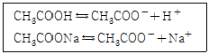
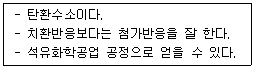
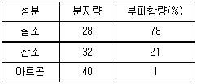

위험물기능장 (2008-03-30 기출문제)
1과목: 임의구분
1. 다음 중 삼황화린의 주 연소생성물은?
- 오산화린가 이산화황
- 오산화린과 이산화탄소
- 이산화황과 포스핀
- 이산화황과 포스겐
(정답률: 83%)

2. 다음 위험물 중 석유속에 보관하는 것은?
- 황린
- 칼륨
- 탄화칼슘
- 마그네슘분말
(정답률: 89%)
3. 다음 중 특수인화물에 속하는 것은?
- C2H5OC2H5
- CH3COCH3
- C6H6
- C6H5CH3
(정답률: 88%)
4. 아세트산과 아세트산나트륨의 혼합 수용액에서 다음과 같은 전리가 이루어진다고 할 때 이 용액에 염산을 한방울 떨어뜨리면 어떤 변화가일어나는지 가장 옳게 설명한 것은?

- CH3COO-은 많아지고, CH3COOH는 적어진다.
- CH3COOH는 많아지고, CH3COO-는 적어진다.
- H+는 많아지고, CH3COOH나 CH3COO-는 변화가 없다.
- H+는 적어지고, CH3COOH나 CH3COO-는 변화가 없다.
(정답률: 74%)
5. 에탄올에 진한 황산을 넣고 온도 130~140℃에서 반응시키면 축합반응에 의하여 생성되는 제4류 위험물은?
- 메틸알코올
- 아세트알데히드
- 디에틸에테르
- 디메틸에테르
(정답률: 64%)
6. 탄화칼슘과 질소가 약 700℃에서 반응하여 생성되는 물질은?
- 아세틸렌
- 석회질소
- 암모니아
- 수산화칼슘
(정답률: 92%)
7. 제1석유류라 함은 아세톤 및 휘발유 그 밖에 액체로서 1기압에서 인화점이 얼마 미만인 것을 말하는가?
- 섭씨 20도
- 섭씨 21도
- 섭씨 70도
- 섭씨 200도
(정답률: 87%)
8. 다음 유지류 중 요오드값이 가장 큰 것은?
- 야자유
- 피마자유
- 올리브유
- 정어리기름
(정답률: 93%)
9. 다음 보기와 같은 공통점을 갖지 않는 것은?

- 에텐
- 프로필렌
- 부텐
- 벤젠
(정답률: 90%)
10. 다음 이산화탄소 소화약제의 성상 중 틀린 것은?
- 증가비중 : 1.53
- 기체밀도(0℃, 1atm) : 1.96g/L
- 임계온도 : 31℃
- 임계압력 : 167.8atm
(정답률: 69%)
11. 등적색의 결정으로 비중이 약 2.69이며, 알코올에는 불용이고 분해온도가 약 500℃로서 가열에 의해 분해하여 산소를 생성하는 위험물은?
- 중크롬산칼륨
- 중크롬산암모늄
- 중크롬산아연
- 중크롬산나트륨
(정답률: 70%)
12. 산화프로필렌에 대한 설명 중 틀린 것은?
- 증기는 공기보다 무겁다.
- 연소범위가 가솔린보다 넓다.
- 발화점이 상온이하로 매우 위험하다.
- 물에 녹는다.
(정답률: 53%)
13. 다음 중 은백색의 광택성 물질로서 비중이 약 1.74인 위험물은?
- Cu
- Fe
- Al
- Mg
(정답률: 83%)
14. 브롬을 탈색시키며, 완전연소할 때 CO2와 H2O가 같은 몰 수로 생성되는 탄화수소에 해당하는 것은?
- CH3 - C ≡ CH
- CH3CH2CH3
- CH2 = C = CH2
- CH3 - CH = CH2
(정답률: 71%)
15. 제4류 위험물 중 품명이 나머지 셋과 다른 것은?
- 니트로벤젠
- 에틸렌글리콜
- 아닐린
- 포름산에틸
(정답률: 60%)
16. 다음 중 분자간의 수소결합을 하지 않는 것은?
- HF
- NH3
- CH3F
- H2O
(정답률: 62%)
17. 공기의 성분이 다음 표와 같을 때 공기의 평균 분자량을 구하면 얼마인가?

- 28.84
- 28.96
- 29.12
- 29.44
(정답률: 78%)
18. 다음 중 이상유체에 대한 설명으로 옳은 것은?
- 압력을 가하면 부피가 감소하고 압력이 제거되면 부피가 다시 증가하는 가상 유체를 의미한다.
- 뉴턴의 점성법칙에 따라 거동하는 가상 유체를 의미한다.
- 비점성, 비압축성인 가상 유체를 의미한다.
- 유체를 관내부로 이동시키면 유체와 관벽사이에서 전단응력이 발생하는 가상 유체를 의미한다.
(정답률: 74%)
19. 다음 위험물 중 제3석유류에 해당하지 않는 물질은?
- 니트로톨루엔
- 에틸렌글리콜
- 글리세린
- 테레핀유
(정답률: 75%)
20. 염소산칼륨의 성상을 옳게 나타낸 것은?
- 무색의 입방정계 결정
- 갈색의 정방정계 결정
- 갈색의 사방정계 결정
- 무색의 단사정계 결정
(정답률: 73%)
2과목: 임의구분
21. H2S에서 S의 비공유전자쌍은 몇 개인가?
- 1
- 2
- 3
- 4
(정답률: 79%)
22. 옥외탱크저장소의 방유제 설치기준으로 옳지 않은 것은?
- 방유제의 용량은 방유제안에 설치된 탱크가 하나인 때는 그 탱크 용량의 110% 이상으로 한다.
- 방유제의 높이는 0.5m 이상 3m 이하로 한다.
- 방유제 내의 면적은 8만m2 이하로 한다.
- 높이가 1m를 넘는 방유제의 안팎에는 계단 또는 경사로를 70m 마다 설치한다.
(정답률: 87%)
23. 다음 중 위험물의 지정수량이 잘못 연결된 것은?
- 철분 - 500kg
- (CH3)2CHNH2 - 200L
- CH2=CHCOOH - 2000L
- Mg - 500kg
(정답률: 65%)
24. 제3류 위험물인 수소화리튬에 대한 설명으로 가장 거리가 먼 것은?
- 물과 반응하여 가연성 가스를 발생한다.
- 물보다 가볍다.
- 대량의 저장 용기 중에는 아르곤을 봉입한다.
- 주수소화기 금지되어 있고 이산화탄소 소화기가 적응성이 있다.
(정답률: 75%)
25. 제1류 위험물 중 일명 초석이라고도 하며 차가운 느낌의 자극이 있고 짠맛이 나는 무색 또는 백색 결정의 질산 염류는?
- KNO3
- NaNO3
- NH4NO3
- KMnO4
(정답률: 67%)
26. 사용전압 35000V를 초과하는 특고압 가공전선과 위험물 제조소와의 안전거리 기준으로 옳은 것은?
- 5m 이상
- 10m 이상
- 13m 이상
- 15m 이상
(정답률: 89%)
27. 다음 위험물 품명에서 지정수량이 200kg 이 아닌 것은?
- 질산에스테르류
- 니트로화합물
- 아조화합물
- 히드라진유도체
(정답률: 85%)
28. 과산화벤조일의 위험성에 대한 설명 중 틀린 것은?
- 수분이 흡수되면 분해하여 폭발위험이 커진다.
- 실온에서는 비교적 안정하나 가열・마찰・충격에 의해 폭발할 위험이 있다.
- 가열을 하면 약 100℃ 부근에서 흰 연기를 낸다.
- 비활성 희석제를 첨가하여 폭발성을 낮출 수 있다.
(정답률: 63%)
29. 27℃, 2atm 에서 20g의 CO2 기체가 차지하는 부피는 약 몇 L 인가?
- 5.59
- 2.80
- 1.40
- 0.50
(정답률: 75%)
30. 다음 물질이 서로 혼합하고 있어도 폭발 또는 발화의 위험성이 없는 것은?
- 금속칼륨과 경유
- 질산나트륨과 유황
- 과망간산칼륨과 적린
- 이황화탄소와 과산화나트륨
(정답률: 91%)
31. 산화성고체 위험물인 과산화나트륨의 위험성에 대한 설명 중 틀린 것은?
- 열분해에 의해 산소를 방출한다.
- 물과의 반응성 때문에 물의 접촉을 피해야 한다.
- 에테르와 혼합하면 혼촉발화의 위험이 있다.
- 인화점이 낮은 가연성 물질이므로 화기의 접근을 금해야 한다.
(정답률: 61%)
32. 다음 중 지정수량이 가장 적은 위험물은?
- (HOOCCH2CH2CO)2O2
- Zn(C2H5)2
- C6H2CH3(NO2)3
- CaC2
(정답률: 67%)
33. 다음 위험물의 옥내저장소 저장창고 바닥을 물이 침투하지 않는 구조로 하지 않아도 되는 위험물은?
- 제3류 위험물 중 금수성 물질
- 제1류 위험물 중 알칼리금속의 과산화물
- 제4류 위험물
- 제6류 위험물
(정답률: 81%)
34. 다음 제4류 위험물의 일반적인 성질에 대한 설명으로 가장 거리가 먼 것은?
- 물에 녹지 않는 것이 많다.
- 액체 비중은 물보다 가벼운 것이 많다.
- 인화의 위험이 높은 것이 많다.
- 증기 비중은 공기보다 가벼운 것이 많다.
(정답률: 83%)
35. 메탄 75vol%, 프로판 25vol% 인 혼합기체의 연소하한계는 몇 vol% 인가? (단, 연소범위는 메탄 5~15vol%, 프로판 2.1~9.5vol% 이다.)
- 2.72
- 3.72
- 4.63
- 5.63
(정답률: 76%)
36. 10wt% 의 H2SO4 수용액으로 1M 용액 200mL를 만들려고 할 때 다음 중 가장 적합한 방법은? (단, S의 원자량은 32이다.)
- 원용액 98g 에 물을 가하여 200mL 로 한다.
- 원용액 98g 에 200mL 의 물을 가한다.
- 원용액 196g 에 물을 가하여 200mL 로 한다.
- 원용액 196g 에 200mL 의 물을 가한다.
(정답률: 66%)
37. 다음 중 가장 약한 산은 어느 것인가?
- HClO
- HClO2
- HClO3
- HClO4
(정답률: 90%)
38. 다음 중 스프링클러헤드의 설치 기준으로 틀린 것은?
- 개방형 스프링클러헤드는 헤드 반사판으로부터 수평방향으로 0.3m의 공간을 보유하여야 한다.
- 폐쇄형 스프링클러헤드의 반사판과 헤드의 부착면과의 거리는 30cm 이하로 한다.
- 폐쇄형 스프링클러헤드 부착장소의 평상시 최고 주위 온도가 28℃ 미만인 경우 58℃ 미만의 표시온도를 갖는 헤드를 사용한다.
- 개구부에 설치하는 폐쇄형 스프링클러헤드는 당해 개구부의 상단으로부터 높이 30cm 이내의 벽면에 설치한다.
(정답률: 80%)
39. 옥외탱크저장소의 탱크 중 압력탱크의 수압시험 기준은?
- 최대상용압력의 2배의 압력으로 20분간 실시하는 수압시험에서 새거나 변형되지 아니하여야 한다.
- 최대상용압력의 2배의 압력으로 10분간 실시하는 수압시험에서 새거나 변형되지 아니하여야 한다.
- 최대상용압력의 1.5배의 압력으로 20분간 실시하는 수압시험에서 새거나 변형되지 아니하여야 한다.
- 최대상용압력의 1.5배의 압력으로 10분간 실시하는 수압시험에서 새거나 변형되지 아니하여야 한다.
(정답률: 90%)
40. 공기를 차단하고 황린을 가열하면 적린이 만들어지는데 이 때 필요한 최소 온도는 약 몇 ℃ 정도인가?
- 60
- 120
- 260
- 400
(정답률: 90%)
3과목: 임의구분
41. 다음 중 Mn 의 산화수가 +2인 것은?
- KMnO4
- MnO2
- MnSO4
- K2MnO4
(정답률: 75%)
42. 다음 위험물 중에서 지정수량이 나머지 셋과 다른 것은?
- KBrO3
- KNO3
- KIO3
- KCIO3
(정답률: 80%)
43. 탄화알루미늄이 물과 반응하면 발생되는 가스는?
- 이산화탄소
- 일산화탄소
- 메탄
- 아세틸렌
(정답률: 81%)
44. 제조소등의 관계인은 그 제조소등의 용도를 폐지한 때에는 폐지한 날로부터 며칠 이내에 신고하여야 하는가?
- 7일
- 14일
- 30일
- 90일
(정답률: 83%)
45. 제5류 위험물의 저장 및 취급방법에 대한 설명으로 옳지 않은 것은?
- 점화원 및 분해를 촉진시키는 물질로부터 멀리한다.
- 용기의 파손 및 충격에 주의한다.
- 가급적 소량으로 분리하여 저장한다.
- 운반용기의 외부에 “물기엄금” 주의사항을 표시한다.
(정답률: 93%)
46. 산화성액체 위험물에 대한 설명 중 틀린 것은?
- 과산화수소의 경우 물과 접촉하면 심하게 발열하고 폭발의 위험이 있다.
- 질산은 불연성이지만 강한 산화력을 가지고 있는 강산화성 물질이다.
- 질산은 물과 접촉하면 발열하므로 주의하여야 한다.
- 과염소산은 강산이고 불안정하여 분해가 용이하다.
(정답률: 68%)
47. 다음 중 소화약제인 Halon 1301의 분자식은?
- CF2Br2
- CF3Br
- CFBr3
- CBr3Cl
(정답률: 91%)
48. 아세톤에 대한 다음 설명 중 틀린 것은?
- 보관 중 분해하여 청색으로 변한다.
- 요오드포름 반응을 일으킨다.
- 아세틸렌 가스의 흡수제에 이용된다.
- 연소 범위는 약 2.6 ~ 12.8% 이다.
(정답률: 83%)
49. 특정옥외저장탱크의 구조에 대한 기준 중 틀린 것은?
- 탱크의 내경이 16m 이하일 경우 옆판의 두께는 4.5mm 이상일 것
- 지붕의 최소두께는 4.5mm 로 할 것
- 부상지붕은 당해 부상지붕 위에 적어도 150mm에 상당한 물이 체류한 경우 침하하지 않도록 할 것
- 밑판의 최소두께는 탱크의 용량이 1000kL 이상의 것에 있어서는 9mm로 할 것
(정답률: 64%)
50. 위험물안전관리법에서 정한 경보설비에 해당하지 않는 것은?
- 비상경보설비
- 자동화재탐지설비
- 비상방송설비
- 영상음향차단경보기
(정답률: 84%)
51. 알루미늄분이 수산화나트륨 수용액과 접촉했을 때 발생하는 것은?
- NaO2
- Na2Al(OH)2
- H2
- AlO2
(정답률: 78%)
52. 다음 중 암적색의 분말인 비금속 물질로 비중이 약 2.2, 발화점이 약 260℃로 물에는 불용성인 위험물은?
- 적린
- 황린
- 삼황화린
- 유황
(정답률: 82%)
53. 연소범위가 약 2.5 ~ 80.5 vol% 이고 은, 구리 등과 반응을 일으켜 폭발성 물질인 금속 아세틸라이드를 생성하는 것은?
- 에탄
- 메탄
- 아세틸렌
- 톨루엔
(정답률: 86%)
54. 질산에스테르류에 대한 설명으로 옳은 것은?
- 알코올기를 함유하고 있다.
- 모두 물에 녹는다.
- 폭약의 원료로도 사용한다.
- 산소를 함유하는 무기화합물이다.
(정답률: 74%)
55. c 관리도에서 k = 20 인 군의 총부적합(결점)수 합계는 58 이었다. 이 관리도의 UCL, LCL을 구하면 약 얼마인가?
- UCL = 6.92, LCL = 0
- UCL = 4.90, LCL = 고려하지 않음
- UCL = 6.92, LCL = 고려하지 않음
- UCL = 8.01, LCL = 고려하지 않음
(정답률: 76%)
56. 일정 통제를 할 때 1일당 그 작업을 단축하는데 소요되는 비용의 증가를 의미하는 것은?
- 비용구배(Cost slope)
- 정상소요시간(Normal duration time)
- 비용견적(Cost estimation)
- 총비용(Total cost)
(정답률: 90%)
57. 일반적으로 품질코스트 가운데 가장 큰 비율을 차지하는 코스트는?
- 평가코스트
- 실패코스트
- 예방코스트
- 검사코스트
(정답률: 90%)
58. 다음 중 데이터를 그 내용이나 원인 등 분류 항목별로 나누어 크기의 순서대로 나열하여 나타낸 그림을 무엇이라 하는가?
- 히스토그램(histogram)
- 파레토도(pareto diagram)
- 특성요인도(causes and effects diagram)
- 체크시트(check sheet)
(정답률: 67%)
59. 모든 작업을 기본동작으로 분해하고, 각 기본 동작에 대하여 성질과 조건에 따라 미리 정해 놓은 시간치를 적용하여 정미시간을 산정하는 방법은?
- PTS법
- WS법
- 스톱워치법
- 실적자료법
(정답률: 88%)
60. 로트로부터 시료를 샘플링해서 조사하고, 그 결과를 로트의 관점기준과 대조하여 그 로트의 합격, 불합격을 판정하는 검사를 무엇이라 하는가?
- 샘플링검사
- 전수검사
- 공정검사
- 품질검사
(정답률: 89%)